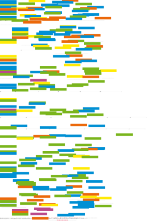
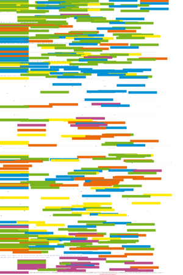
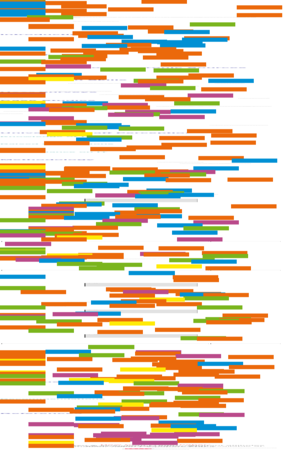

| About IR |
| Editors |
| Author instructions |
| Copyright |
| Author index |
| Subject index |
| Search |
| Reviews |
| Register |
| Home |

Volume 4 No 2 October 1998
Information Research: an electronic journal, is published four times a year by Professor T.D. Wilson of the Department of Information Studies, University of Sheffield in association with
University of North Texas, USA (Regional Editor, Dr. Amanda Spink); University of Tampere, Finland (Regional Editor, Dr. Reijo Savolainen) and the University of Vilnius, Lithuania (Regional Editor, Dr. Elena Maceviciute)
ISSN 1368-1613
Contents
 Editorial
Editorial
Refereed Papers
Information contracting tools in a cancer specialist unit: the role of Healthcare Resource Groups (HRGs), by Carol Marlow, Royal Marsden Hospital, London and Hugh Preston, Department of Information and Library Studies, University of Wales, Aberystwyth
Searching heterogeneous collections on the Web: behaviour of Excite users, by Amanda Spink & Judy Bateman, University of North Texas, Denton, Texas, USA, and Major Bernard. J. Jansen. United States Military Academy, West Point, New York, USA
Working Papers
Student attitudes towards electronic information resources, by Kathryn Ray & Joan Day, Department of Information and Library Management, University of Northumbria at Newcastle, UK
Doctoral Workshop Papers from "Information Seeking in Context" - an International Conference on Information Needs, Seeking and Use in Different Contexts
Reviews
World List of Departments and Schools of Information Studies, Information Management, Information Systems, etc.
If you find Information Research useful, please sign in and we'll notify you of future issues.
Click on this icon for usage statistics: 
Information Research is designed, maintained and published by by Professor Tom Wilson. Design and editorial content © T.D. Wilson, 1995-98